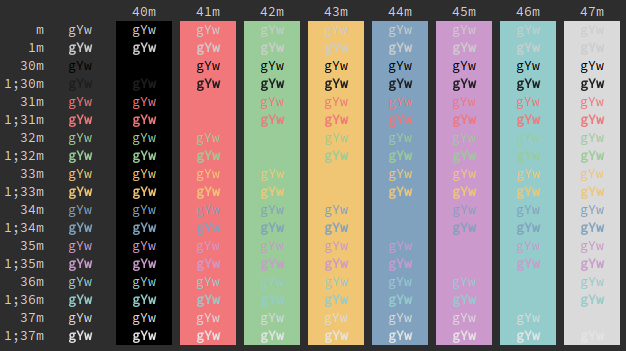
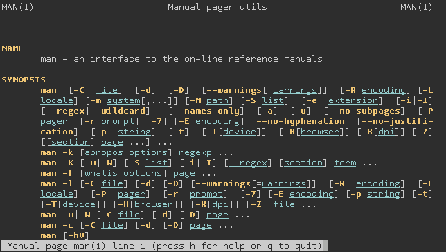

Tomorrow terminal color scheme
I took the TomorrowNight and TomorrowNightEighties terminal color schemes from Chris Kempson’s Tomorrow theme and remixed them, per my taste, for visual harmony and readability in dark hours. Behold!


ChromeOS
To use this color scheme in the crosh terminal, simply paste the following snippet into the JavaScript console, which you can open by pressing the Control-Shift-J keys simultaneously. Now all existing terminals, as well as any new terminals you launch, will use this color scheme.
term_.prefs_.set("background-color", "#2d2d2d");
term_.prefs_.set("foreground-color", "#cccccc");
term_.prefs_.set("cursor-color", /* "#87afd7" */ "rgba(135, 175, 215, 0.5)");
term_.prefs_.set("color-palette-overrides", ["#000000", "#f2777a", "#99cc99", "#f0c674", "#81a2be", "#cc99cc", "#94CCCC", "#dadada", "#1d1f21", "#f2777a", "#99cc99", "#f0c674", "#81a2be", "#cc99cc", "#94CCCC", "#e4e4e4"]);
~/.Xdefaults
To use this color scheme in URxvt or XTerm, simply paste the following
snippet into your ~/.Xdefaults file and then feed it into the xrdb
program. Now any new terminals you launch will use this color scheme.
! BLK
#define _color0 #000000
#define _color8 #1d1f21
! RED
! TomorrowNightEighties.t_red
#define _color1 #f2777a
#define _color9 _color1
! GRN
! TomorrowNightEighties.t_green
#define _color2 #99cc99
#define _color10 _color2
! YEL
! TomorrowNight.t_yellow
#define _color3 #f0c674
#define _color11 _color3
! BLU
! TomorrowNight.t_blue
#define _color4 #81a2be
#define _color12 _color4
! MAG
! TomorrowNightEighties.t_purple
#define _color5 #cc99cc
#define _color13 _color5
! CYN
! TomorrowNightEighties.t_aqua(hue,value) + TomorrowNight.t_aqua(saturation)
#define _color6 #94CCCC
#define _color14 _color6
! WHT
! TomorrowNightEighties.t_selection
#define _color7 #dadada
! TomorrowNightEighties.t_current_line
#define _color15 #e4e4e4
! FMT
#define _colorBD _color11
#define _colorUL _color6
! TXT
! TomorrowNightEighties.t_foreground
#define _foreground #cccccc
! TomorrowNightEighties.t_background
#define _background #2d2d2d
#define _cursorColor #aeafad
URxvt*color0 : _color0
URxvt*color1 : _color1
URxvt*color2 : _color2
URxvt*color3 : _color3
URxvt*color4 : _color4
URxvt*color5 : _color5
URxvt*color6 : _color6
URxvt*color7 : _color7
URxvt*color8 : _color8
URxvt*color9 : _color9
URxvt*color10 : _color10
URxvt*color11 : _color11
URxvt*color12 : _color12
URxvt*color13 : _color13
URxvt*color14 : _color14
URxvt*color15 : _color15
URxvt*colorBD : _colorBD
URxvt*colorIT : _colorIT
URxvt*colorUL : _colorUL
URxvt*foreground : _foreground
URxvt*background : _background
URxvt*cursorColor : _cursorColor
XTerm*color0 : _color0
XTerm*color1 : _color1
XTerm*color2 : _color2
XTerm*color3 : _color3
XTerm*color4 : _color4
XTerm*color5 : _color5
XTerm*color6 : _color6
XTerm*color7 : _color7
XTerm*color8 : _color8
XTerm*color9 : _color9
XTerm*color10 : _color10
XTerm*color11 : _color11
XTerm*color12 : _color12
XTerm*color13 : _color13
XTerm*color14 : _color14
XTerm*color15 : _color15
XTerm*colorBD : _colorBD
XTerm*colorIT : _colorIT
XTerm*colorUL : _colorUL
XTerm*foreground : _foreground
XTerm*background : _background
XTerm*cursorColor : _cursorColor
! enable coloring for bold and underlined text
XTerm*vt100.boldColors : False
XTerm*vt100.colorBDMode : True
XTerm*vt100.colorULMode : True
XTerm*vt100.colorRVMode : False
XTerm*vt100.veryBoldColors : 6